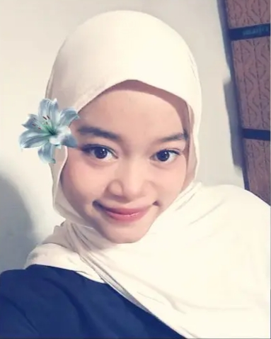

Selamat datang di halaman profil pribadi saya. Website ini dibuat sebagai media perkenalan yang memuat informasi singkat mengenai identitas, pendidikan, kegemaran, minat, hobi, serta beberapa hal menarik mengenai diri saya.
Jelajahi profil ↓
Beberapa informasi dasar sebagai gambaran singkat mengenai identitas dan latar belakang saya.
"Saya lebih menikmati proses ketika harus memahami masalah, mencari pola, lalu menemukan solusi."
Saya merupakan mahasiswa Ilmu Komputer yang memiliki ketertarikan terhadap bidang teknologi, khususnya pemrograman dan pemecahan masalah.
Saya lebih menikmati proses ketika diberikan sebuah permasalahan untuk dianalisis, dipahami, kemudian dicari solusi yang tepat. Bagi saya, menemukan cara agar suatu masalah dapat diselesaikan merupakan salah satu bagian menarik dalam mempelajari teknologi.
Saya mungkin tidak terlalu percaya diri ketika harus membuat sebuah desain visual dari nol. Oleh karena itu, desain bukan menjadi fokus utama saya. Saya lebih tertarik pada logika, analisis, pemrograman, basis data, dan problem solving.
Dalam proses belajar, saya juga berusaha untuk terus mencoba berbagai hal baru agar dapat mengetahui bidang yang paling sesuai dengan kemampuan dan ketertarikan saya.
Pendidikan menjadi salah satu bagian penting dalam proses pengembangan pengetahuan dan keterampilan saya.
Program Studi Ilmu Komputer
Rekayasa Perangkat Lunak
Beberapa hal sederhana yang menjadi bagian dari keseharian dan waktu luang saya.
Saya senang mencoba memahami cara kerja suatu program dan mencari tahu bagaimana sebuah permasalahan dapat diselesaikan menggunakan kode.
Membaca menjadi salah satu kegiatan yang saya nikmati ketika memiliki waktu luang dan ingin menikmati suasana yang lebih tenang.
Musik menjadi salah satu teman ketika belajar, mengerjakan tugas, maupun beristirahat.
Saya senang mencari tahu sesuatu yang belum saya pahami dan mencoba mempraktikkannya secara langsung.
Menonton film atau drama menjadi salah satu cara saya menikmati waktu luang.
Bidang yang ingin saya pelajari, eksplorasi, dan kembangkan secara bertahap.
* Angka pada bagian ini merupakan gambaran tingkat ketertarikan pribadi, bukan penilaian tingkat keahlian.
Informasi ringan yang dapat memberikan gambaran lebih personal mengenai diri saya.
Saya lebih tertarik ketika harus memahami suatu masalah dan mencari cara untuk menyelesaikannya.
Saya merasa lebih mudah memahami suatu konsep ketika dapat langsung mencoba dan menerapkannya.
Saya kurang percaya diri ketika harus membuat desain dari nol. Saya lebih menikmati bagian yang berkaitan dengan logika dan pemecahan masalah.
Ketika menemukan sesuatu yang menarik, saya biasanya terdorong untuk mencari tahu dan mencoba memahaminya.
Selain pemrograman dan problem solving, saya juga memiliki sedikit ketertarikan terhadap pekerjaan yang berkaitan dengan pengolahan dan penginputan data.
Saya masih berada dalam proses mengenali kemampuan dan minat saya agar dapat berkembang ke arah yang paling sesuai.
Saya ingin terus meningkatkan kemampuan di bidang teknologi, terutama dalam pemrograman, problem solving, logika, dan pengolahan data. Selain memperoleh pengetahuan melalui perkuliahan, saya juga ingin mendapatkan pengalaman melalui berbagai proyek dan latihan.
Terima kasih telah meluangkan waktu untuk mengenal saya melalui halaman profil ini. Semoga informasi yang disajikan dapat memberikan gambaran singkat mengenai diri saya.
↑ Kembali ke atas